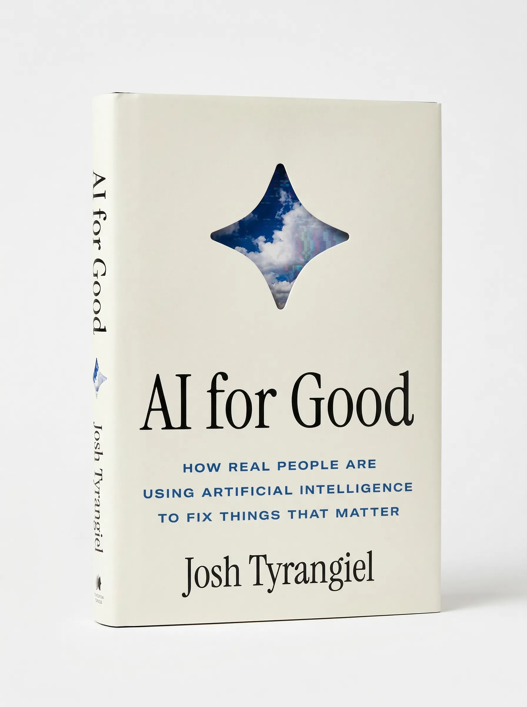

Josh Tyrangiel is a journalist, producer, and author. He has led newsrooms at Bloomberg, The Atlantic, and Time, and spent three decades covering the intersection of technology, culture, and power. His book AI for Good is published by Simon & Schuster in 2026. Available at Amazon, Bookshop, IndieBound. Some quick test text for pasting with styling
AI for Good

AI is usually framed as a radical force of transformation—speeding us into a utopian future or a total hellscape. This book tells a different story. It’s not about high-profile tech CEOs trying to create an AI superintelligence. It’s about smart pragmatists using AI to make things that matter in the world a little bit better.
My own journey into AI began with a late-night YouTube video featuring the retired four-star general who ran Covid vaccine distribution during Operation Warp Speed. The success of that effort depended on AI’s ability to synthesize vast amounts of logistical data. AI wasn’t the hero—it was the tool that helped real people accomplish a seemingly impossible task.
This book follows those kinds people—wise, skilled, stubborn people who are contributors to a thriving AI counterculture. It explores AI’s quiet revolution in government, medicine, education, and human connection—places where it amplifies human judgment rather than replaces it. Success isn’t guaranteed. Change is hard. Institutions move slowly. But even in failure there are lessons for anyone interested in using AI carefully to build a better world today.
"A lively, irreverent, and sharply observed critique of AI hype." —Kirkus Reviews
Buy: Amazon, Bookshop, IndieBound, Simon & Schuster, The Strand
Upcoming events:
Book signing and Q&A with Ashlee Vance — Kepler's Books, Menlo Park — May 18th, 2026
Book signing and Q&A with Jeffrey Goldberg — Politics and Prose at The Wharf, Washington, DC — May 20th, 2026
Media assets: press kit, book cover, headshots
Biography
Josh Tyrangiel is one of the most influential figures in modern American media. As the head of Bloomberg Media, he transformed a financial data company into a global news powerhouse, overseeing Bloomberg Television, Bloomberg Businessweek, Bloomberg.com, and Bloomberg Radio.
Before Bloomberg, Tyrangiel served as editorial director of The Atlantic, where he helped guide the storied publication through its digital reinvention. His career in journalism began at Time magazine, where he rose to become the youngest deputy managing editor in the magazine's history.
A regular contributor to The Washington Post and The New York Times, Tyrangiel has spent three decades covering the intersection of technology, culture, and power. His first book, AI for Good, is published by Simon & Schuster!
He is the founder of Backstory Partners, a strategic advisory and production company. He lives in New York.
Deputy Managing Editor — Time Magazine
Editorial Director — The Atlantic
Head of Media — Bloomberg
Author — AI for Good
Founder — Backstory Partners
Journalism
Bloomberg, The Atlantic, The Washington Post,
The New York Times, Time
Featured Article Title
Bloomberg Businessweek, 2023
Featured Article Title
The Atlantic, 2022
Featured Article Title
The Washington Post, 2023
Featured Article Title
The New York Times, 2024
Featured Article Title
Bloomberg, 2021
Featured Article Title
Time, 2019
Speaking
Josh Tyrangiel speaks on the future of media, artificial intelligence, and the evolving relationship between technology and journalism. His talks draw on three decades of experience leading newsrooms and reporting on the forces reshaping how we create, consume, and trust information.
Topics:
AI & the Future of Information
The Business of Media
Leadership in Newsrooms
Technology, Trust & Society
Building AI for Good
For speaking inquiries, get in touch.
Media
Podcast Appearance Title
Podcast — AI for Good discussion
TV Interview Title
Television — AI policy & newsrooms
Podcast Appearance Title
Podcast — Media business & AI
Conference Talk Title
Video — Responsible AI development
Longform Profile Title
Profile — Career arc & AI reporting
TV Segment Title
Television — AI & democratic institutions
Backstory Partners
Strategic advisory and production at the intersection
of media, technology, and narrative.